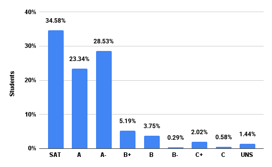
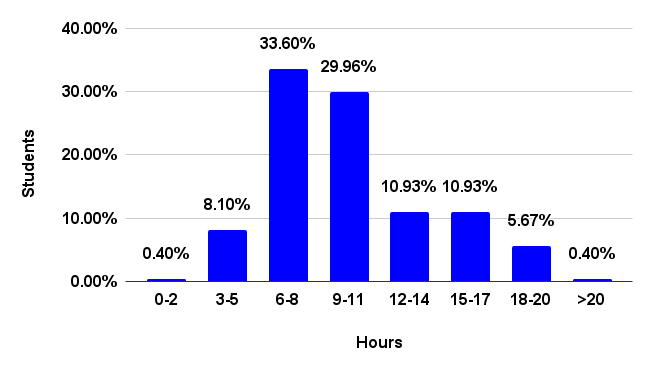

FAQs
Email heads@cs50.harvard.edu with any other questions!
- Advice
- Auditing
- College Requirements
- Comfort
- Cross-Registering
- COVID-19
- Curriculum
- First Years
-
Grades
- How can I change from SAT/UNS to letter grade?
- How can I check the status of my Grading Basis Change Request?
- Should I take CS50 SAT/UNS or for a letter grade?
- What is CS50’s grade distribution?
- Which concentrations offer concentration credit for CS50?
- Which concentrations require a letter grade in order for CS50 to count for concentration credit?
- Laptops
- Lectures
- Prior Experience
- Problem Sets
- Sections
- Semesters
- Simultaneous Enrollment
- Support
- Workload
Advice
How should I structure my week?
Most weeks follow the pattern below.
| Monday | lecture | |
| Tuesday | sections | |
| Wednesday | sections, office hours | |
| Thursday | office hours | |
| Friday | office hours | |
| Saturday | office hours | |
| Sunday | office hours | problem set |
Accordingly, plan to
- attend lectures on Mondays (or watch recordings thereof if simultaneously enrolled in another course),
- attend section on Tuesdays or Wednesdays,
- optionally attend office hours on Wednesdays, Thursdays, Fridays, Saturdays, and/or Sundays, and
- submit problem sets by Sundays.
Auditing
Can I audit CS50?
Yes, if by audit you mean attend or watch the courses lectures and/or complete the course’s problem sets.
If, though, you would like to attend sections and office hours, and/or submit problem sets for feedback, you should register or cross-register instead.
College Requirements
Does CS50 satisfy any College requirements?
Yes. You may take CS50 to fulfill Science and Engineering and Applied Science distribution requirement or the Quantitative Reasoning with Data (QRD) requirement, but not both.
- To satisfy Science and Engineering and Applied Science distribution requirement, you may take CS50 SAT/UNSAT or for LG.
- To satisfy the Quantitative Reasoning with Data (QRD) requirement, you may take CS50 for LG only.
Comfort
Will everyone else know more than me? Less than me?
Not at all! Approximately 40% of CS50 students have never taken a CS course before. Moreover, in Fall 2025, 48% of students described themselves as among those less or least comfortable, while 23% described themselves as more comfortable, and 29% described themselves as somewhere in between. No matter your own comfort level, then, you’ll be in good company!

Cross-Registering
Can I cross-register for CS50?
Yes, if you are a student at MIT or in any of Harvard’s graduate schools, you may cross-register.
COVID-19
What should I do if I show symptoms of or test positive?
Don’t attend lecture, section, office hours, or any other activities in person. Just let us know at heads@cs50.harvard.edu, CCing your resident dean. We’ll arrange for you to keep up online.
What should I do if I need to isolate or quarantine?
Not to worry, let us know at heads@cs50.harvard.edu, CCing your resident dean. We’ll arrange for you to keep up online.
Curriculum
Which languages will I learn?
Rather than teach just one language, CS50 introduces students to a range of “procedural” programming languages, each of which builds conceptually atop another, among them Scratch, C, Python, SQL, and JavaScript. Along the way does the course also introduce students to HTML and CSS (which are languages but not programming languages). The goal, ultimately, is for students to feel not that they “learned how to program in X” but that they “learned how to program.”
Why does CS50 use C?
See this answer on Quora!
First Years
Can first years take both CS50 and a Freshman Seminar SAT/UNS?
Yes. Even though first years may not ordinarily enroll in both a Freshman Seminar and another non-letter-graded course in any one term, they may take both CS50 and a Freshman Seminar SAT/UNS.
Should first years take CS50?
Yes, if they would like! In Fall 2024, first years composed a plurality of CS50’s student body. While students should be mindful of CS50’s workload and should perhaps avoid taking 4 pset-based classes, students shouldn’t shy away (from CS50 or any other introductory course) simply because they’re first years.
Grades
How can I change from SAT/UNS to letter grade?
If you are a College student, submit a Grading Basis Change Request form no later than 2025-11-17T23:59:00-05:00, the term’s eleventh “Monday”.
If you are a grad student, email enrollment@fas.harvard.edu no later than 2025-11-17T23:59:00-05:00, the term’s eleventh “Monday”, and FAS’s Registrar will make the change for you.
If you are a cross-registered student, email your home registrar no later than 2025-11-17T23:59:00-05:00, the term’s eleventh “Monday”, and your home registrar should make the change for you.
How can I check the status of my Grading Basis Change Request?
If you are a College student, see step 5 of the Change of Grading Basis Workflow.
Should I take CS50 SAT/UNS or for a letter grade?
If you are a College student, unless your (potential) concentration requires that you take CS50 for a letter grade, you should take CS50 SAT/UNS, which is the default. Here’s why!
If you are a grad student or cross-registered, unless your department or school requires that you take CS50 for a letter grade, you should take CS50 SAT/UNS, which is the default. Here’s why!
What is CS50’s grade distribution?
Per CS50’s syllabus, “what ultimately matters in this course is not so much where you end up relative to your classmates but where you, in Week 11, end up relative to yourself in Week 0.” Accordingly, provided you put in the time and effort, odds are you’ll fare quite well! In Fall 2025, 35% of students received a final grade of SAT, 23% of students received a final grade of A, 29% of students received a final grade of A-, 9% of students received a final grade in the B range, and 2% of students received a final grade in the C range, per the below. Cases of E or UNS were typically extenuating circumstances.

Which concentrations offer concentration credit for CS50?
If you are a College student, see this spreadsheet.
Which concentrations require a letter grade in order for CS50 to count for concentration credit?
If you are a College student, see this spreadsheet. Note that you may take CS50 SAT/UNS and concentrate in CS; CS does not require a letter grade.
Laptops
If my laptop isn’t working, can I borrow one?
Yes, SEAS Computing has a (small) number of loaner computers that they can loan out for a couple of weeks at a time. They arent’t replacements, just a way of not falling too far behind while you either get your current machine repaired or procure a new one. Email ithelp@harvard.edu to arrange.
Lectures
When are lectures?
Lectures are ordinarily on Mondays, 1:30pm–4:15pm ET, which is a double block, but we’ll occasionally end before 4:15pm ET. And we’ll take one or more breaks during most lectures.
The course’s first lecture, though, will be 2025-09-03T13:30:00-04:00.
When are recordings of lectures available?
Lectures are live-streamed and available on demand the moment a lecture’s begun, a la a DVR. So if you are simultaneously enrolled in another course, you can watch them on video anytime after they’ve begun.
Prior Experience
Can I resubmit code I already wrote if I took CS50 AP or CS50x?
If you took part or all of CS50 AP (online or in high school) or CS50x (online), you can resubmit code from problem sets that you already completed so long as you completed them in a “reasonable” manner, per the course’s policy on academic honesty. If you completed them in an “unreasonable” manner, as by viewing someone else’s solutions at the time, you should not review or resubmit your prior work; you should instead re-do those problem sets from scratch.
If you do resubmit code that you already wrote, be sure it adheres to the current semester’s specifications, which might differ from earlier versions. And be sure to mention via a comment in your code that you previously submitted it.
Does CS50 have any prerequisites?
No, CS50 is indeed designed for concentrators and non-concentrators alike, with or without prior programming experience. And two thirds of CS50 students have indeed never taken CS before. Even so, while it is not necessary (or expected!) that you prepare (e.g., over the summer) to take CS50, some students find it helpful to do so! If anything, a bit of prep over the summer might help you feel all the more comfortable in the course’s first weeks, especially if you’re a first-year, in which case both CS and college might be new to you!
If, then, you would like to prepare over the summer, we recommend that you take (for free!) CS50’s Introduction to Programming with Scratch on edX. (No need to pay for a certificate!) We use Scratch, a graphical programming language from MIT’s Media Lab, in CS50’s own first week in the fall, so spending a bit of time with Scratch over the summer will allow you to hit the ground running. Even though Scratch is designed for younger students, here’s why we use Scratch (for just one week!) at Harvard and Yale alike!
Should I skip CS50 if I already took AP CS A?
Probably not. Most students who have taken AP CS A still take CS50 as it tends to fill in gaps in their knowledge and also introduces them to C (and more!). If you can’t complete the test from previous years quickly and correctly, you shouldn’t skip CS50.
Should I skip CS50 if I already took AP CSP?
Probably not, unless you took CS50 AP. If you can’t complete the test from 2022–2023 academic year quickly and correctly, you shouldn’t skip CS50.
Problem Sets
What’s the difference between “less comfortable” and “more comfortable” problems? Do I have to do both?
In some earlier problem sets, you’ll have a choice between a “less comfortable” and a “more comfortable” problem.
The “less comfortable” are what you might consider the “standard” version of the problem, designed for students who have little or no prior experience. The “more comfortable” are the “challenge” version, designed for students who consider themselves more comfortable due to prior study/experience before this class. As such, they may require more concepts than have been covered in the course so far.
You don’t get any extra points for doing the “more comfortable” problems. If you submit both, we will consider the one with the highest score. For reference, in Fall 2025, 10–35% of students submitted the “more comfortable” problems.
Sections
Is attendance at section expected?
Yes, as sections are meant to be a more intimate, interactive opportunity to review the week’s material.
Semesters
When is CS50 offered?
CS50 is offered primarily in fall term. All students, including concentrators and non-concentrators, should take CS50 in fall term. However, SEAS concentrators and secondaries unable to take the course in fall term may alternatively take a (smaller-scale) version of CS50 in the spring or summer.
Because of summer term’s shorter length, the summer version of CS50 is the most intensive.
How do fall, spring, and summer terms differ?
The fall version of CS50 is for everyone, including concentrators and non-concentrators as well as cross-registrants.
The spring and summer versions of CS50 are for students who are unable to take the course in fall term.
Because of summer term’s shorter length, the summer version of CS50 is the most intensive.
| Fall | Spring | Summer | |
|---|---|---|---|
| CS50 Fair | ✓ | ||
| CS50 Hackathon | ✓ | ||
| CS50 Lunches | ✓ | ||
| CS50 Puzzle Day | ✓ | ||
| Enrollment | Unlimited | Limited | Limited |
| Final Project | ✓ | ✓ | ✓ |
| Grading Basis | SAT/UNS or letter | SAT/UNS or letter | SAT/UNS or letter |
| Lectures | Live | Video | Video |
| Sections per Week | 1 | 1 | 2 |
| Office Hours | ✓ | ✓ | ✓ |
| Problem Sets | ✓ | ✓ | ✓ |
| Simultaneous Enrollment | ✓ | ✓ | ✓ |
Simultaneous Enrollment
Can I simultaneously enroll in CS50 and another course that meets at the same or overlapping time?
Yes, you may simultaneously enroll in CS50 and another course that meets at the same time, watching CS50’s lectures anytime online and attending the other course in person, so long as you can regularly attend section. Per the Office of Undergraduate Education, CS50 has been “granted a waiver from the Administrative Board petition process by a subcommittee of the Standing Committee on Undergraduate Educational Policy (EPC).”
Support
How much academic support does CS50 provide?
Quite a lot! In addition to lectures, and sections, CS50 also offers around 25 staff-hours of office hours per week.
Workload
How difficult is CS50?
For many students, CS50 is simply more time-consuming than it is difficult. Starting each week’s problem set early, then, makes things easier! And the course’s difficulty was also recalibrated back in 2016, per the Q data below.

How much work is CS50?

By mid-semester, most students spend 8+ hours per week on the course’s problem sets, but it definitely varies by problem set, per the below, and student.
